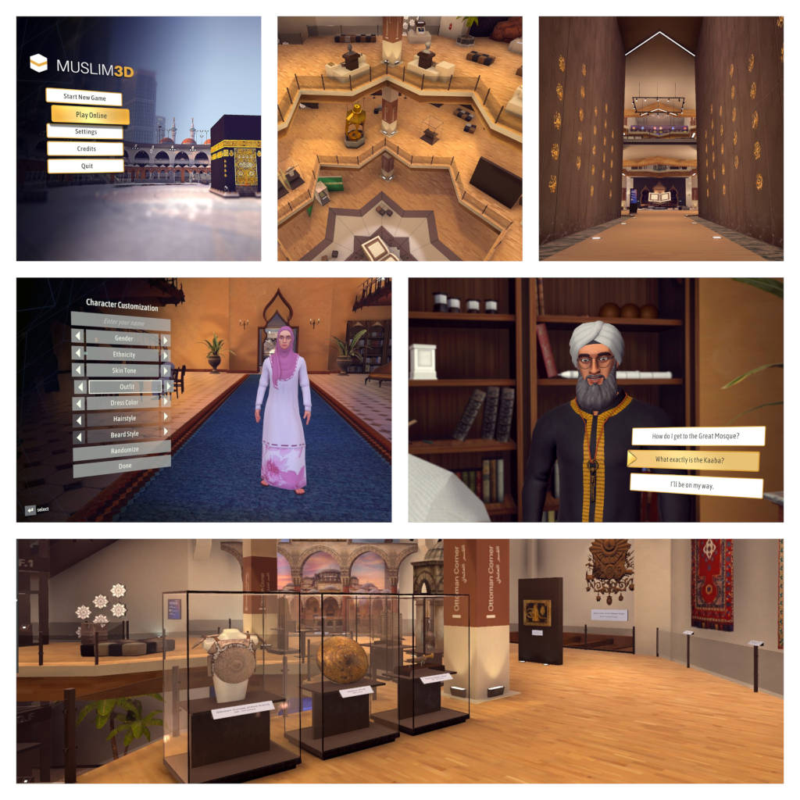

Software Engineer / Unity Developer
Zoltán is an experienced software engineer based in Bonn, Germany with a diverse range of skills, primarily focusing on game development using Unity. Having worked on multiple released titles, he has a strong understanding of the full application development cycle, from inception to release. Working in small teams and high responsibility roles, he has been in charge of working on a wide variety of tasks, giving him strong fundamentals in multiple areas of Unity development. Being highly self-motivated and a skillful communicator allows him to work effectively in remote positions. In addition to having over 5 years of expertise in Unity development, Zoltán possesses hands-on experience in developing mobile applications, as well as a solid knowledge of C++ and low-level programming.
Started programming at an early age after being introduced to the demoscene, a subculture focused on creating digital art.
Pursued a degree in Computer Science at university (University of Miskolc and Vienna University of Technology), where I studied engineering, mathematics and physics, along with other essential computer science subjects.
In 2009 started working as a freelance iOS developer until 2017, when I joined Brainseed Factory as a Unity developer working on Squishies, a PlayStation VR title.
After the successful release of the game, I joined the team at Senselab.io as a Unity developer working on developing educational and marketing applications for the Hololens and a variety of AR/VR platforms.
In late 2019 I was offered a lead developer position at Bigitec for an upcoming educational game project. This role served as a significant platform for my growth as a game developer. I was responsible for creating the technical backbone of the project, which entailed designing and developing a variety of fundamental game systems, using data-driven software architecture paradigms. This included systems for state management, dialogue, quests, input, UI, inventory, localization, and audio, among others. I also developed various editor tools to improve development efficiency.
After the project's release, Bigitec ran out of funding and closed down, and I moved on to work at TeamViewer on Frontline Spatial Workplace.
Check out my compact and detailed CVs.
Select project: Room Reconstruction From Meshes Created Through 3D Scanning
Keywords: iOS, AR, 3D-scanning, Swift, Objective C, SceneKit, Remote Work
Read my white paper about this project for details.
Squishies - A PlayStation VR/SteamVR game
Keywords: Unity, VR, Gameplay, Shaders, Optimization, UI, Input, Level Editor, Level Design, SCRUM.
Check out the game on Steam or on the PlayStation Store.
Keywords: Unity, AR, VR, Hololens, Networking, Business Logic, UI
Muslim 3D: an interactive museum/adventure game
Keywords: Lead Developer, Unity, Application Architecture Design, Fundamental Game Systems Implementations, Data-Driven Design.
Check out the game on Steam.
Frontline Spatial: multiplatform AR-based workflow assistance application
Keywords: Hololens, iOS, Code Reviews, NoSQL, C#, .NET, UI, Mentoring, Remote Work, Corporate software development
I love participating in game jams. With a twist. Instead of coding, I practice my other passion: writing music.
Check out our game about the homeless slug and a ghostly snail, Pro SnailR II, on the Global Game Jam website!
I wrote the song in Logic Pro. Listen to the soundtrack on Soundcloud.
Created with my dear friends at Wayward Studios, Sister Cities is a game about sustainability, sharing resources and keeping your people happy. Gameplay video and download is available on itch.io.
Check out my soundtrack written for the game on Spotify. The album cover was drawn by my son, Bálint.
A modern fantasy retro-computer simulator written in C++ and SDL.
The idea of the RetroSim projects was born in 2011 while I was experimenting with writing graphical effects using an iOS app equipped with a BASIC interpreter. It occurred to me that an enhanced version featuring a 6502 assembler and a simple "GPU" reminiscent of the Commodore 64's VIC chip would be an interesting evolution of this concept. So I sat down and compiled a bunch of ideas for this virtual machine. Some of these ideas included adding registers for graphics, sound, input/output, networking, etc.
I started out by implementing a 6502 assembler/disassembler/emulator, along with a simple graphics unit. I also added a simple command line debugger/monitor program. It was at this time when I asked myself: what if I designed my own CPU instruction set architecture? That turned out to be a very exciting challenge. So I went ahead and created the A65000 CPU, implemented a simulator and an assembler for it.
All of the code was written in C++/SDL to keep the code portable. The project is still work in progress. For more details visit the RetroSim Wiki or check out the latest sources on GitHub!
My 6502 assembler originally written for the RetroSim project. Written in C++. Check out the source code on GitHub.
The assembler for my custom A65000 CPU. Written in C++. Source code is available on Github. Documentation is available here.
BDF Converter is a command-line tool written in C# that can be used to convert font files in the BDF (Glyph Bitmap Distribution Format) format to PNG images and tile data. The tool generates a PNG image of the font atlas and a binary file containing the tile data. Sources here.
Written in Swift, a simple command line tool for extracting color palettes from images. Source is available on GitHub.
Written in C++/SDL, as a fun weekend project. Source is available on GitHub.
A small exercise in Go. Source.
It's a simple program written in C that calculates the frequency tables for the Commodore 64 from note C-0 to B-7. Source code available here.
I like socializing, playing the guitar, skateboarding, playing table tennis, cycling and writing music.
You can reach me at info@arcanelab.com